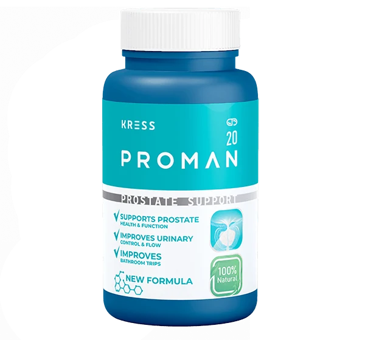

Doctor's introduction
Most men wait because the problem feels too private to discuss
I have spoken with many men who could describe every detail of their work, business, family and responsibilities, but became silent when the subject turned to urinary comfort or male confidence.
Last month, a 58-year-old man sat in my office and kept his voice low even though the room was private. He was not there because of severe pain. He came because he was tired of pretending.
He told me he had started waking once at night, then twice, then so often that he no longer enjoyed going to bed. In the morning his wife would ask why he looked exhausted. He would answer, "I'm fine," because admitting the real reason made him feel old before his time.
What bothered him most was not only the bathroom. It was checking for toilets during family visits. It was refusing long trips. It was lying awake beside his wife, wondering if she could feel how much confidence he had lost. He had no clear plan yet. He only knew he did not want another year to feel the same.
They did not want to say that they were waking up several times at night. They did not want to admit that the stream felt weaker than before. They did not want their wife to notice that they had started avoiding intimacy.
So they waited. One month became one year. One extra bathroom trip became three. The problem was no longer only about urination. It was affecting sleep, energy, mood and the quiet feeling of being a strong man.
Many women notice the change before the man is ready to speak. They see him wake again and again. They see him tired in the morning. They feel him pulling away, not because love is gone, but because confidence is no longer the same.
That is why I always tell men to look at the whole picture. A night trip to the bathroom may be private, but the consequences are not private. The tired face at breakfast, the short temper at work, the silence beside a wife, the fear before a long journey - these are the moments that make a man realise the issue is no longer small.
Ignored symptoms
The signs many men explain away as "normal age"
One symptom may seem small. But when several appear together, they can gradually begin controlling a man's entire routine.
When a man plans his evening around the bathroom, avoids long trips, drinks less water and sleeps lightly because he expects to wake again, his life is already adjusting around the problem.

A familiar night
"At first I woke up only once. Then it became three or four times every night."
This is how many men describe it. The first change feels harmless. A man wakes once, uses the bathroom and returns to bed. He tells himself it was the water he drank or the stress of the day.
Then the night becomes lighter. He wakes again at 1 a.m., again at 3 a.m., and again before sunrise. Morning arrives, but he does not feel rested. His body is present, but his energy is missing.
At work, patience becomes shorter. On a journey, he begins looking for a toilet before he looks for a seat. At home, he avoids conversations about why he seems distant. In the bedroom, confidence can become fragile.
Why men delay
The greatest mistake is noticing the problem and doing nothing
Men delay for understandable reasons. Some feel embarrassed. Some hope the issue will pass by itself. Some are afraid of hearing something serious. Some hide the problem from their wife because they do not want to feel weak.
Others try temporary approaches: drinking less water, avoiding evening tea, staying near the bathroom, or using something suggested by a friend. These may reduce inconvenience for a short time, but they do not create a consistent support routine.
"The greatest mistake is not noticing the problem. The greatest mistake is noticing it and doing nothing."
Temporary approaches may focus on one isolated symptom without supporting urinary comfort, prostate health and male vitality together. For men over 40, the more sensible approach is daily support that fits normal life and can be used consistently.
The search for a daily routine
What I looked for was not a dramatic promise. It was a simple routine men would actually use.
Over the years, I saw the same desire in many conversations. Men wanted privacy. They wanted convenience. They wanted something that did not make them feel old before their time.
They did not want to build life around the toilet. They wanted to sleep, travel, work, love and feel like themselves again. They wanted support for the prostate, but they also wanted support for energy, circulation, male vitality and confidence.
This is why a formula should not speak only to one symptom. The areas are connected in daily life. When urinary comfort improves, a man may sleep better. When sleep improves, energy can return. When energy and control feel better, confidence may follow.
The moment many men recognise
There comes a night when a man realises he no longer wants to live around the problem.
It may happen after another broken sleep. Or during a journey when he chooses a seat near the aisle. Or beside his wife, when he stays quiet because he does not want to explain what is happening.
That moment is not about panic. It is about honesty. A man accepts that ignoring the issue has already cost him energy, comfort and confidence. Only then does a simple daily support routine begin to make sense.

First introduction
Proman was created as a daily men's support formula
Proman combines ingredients selected for prostate health, urinary comfort, energy and male vitality. It is designed for men who want a private, natural daily routine after 40.
Why this formula feels different
Proman is not positioned around one isolated complaint
A man rarely describes the problem as only one thing. He may mention night bathroom trips first. Then he admits the flow is weaker. Then he says he feels tired. Later, he may quietly mention that he does not feel as confident with his wife.
That is why Proman is presented as daily support across connected areas: prostate function, urinary comfort, circulation support, energy and male vitality. The purpose is not to replace professional advice, and it is not to promise the same result for every man.
The purpose is to give a man a consistent routine he can start privately, without shame, and continue as directed.
Formula
A combination of plant extracts and nutrients traditionally used in men's wellness routines
"I was not looking for one miracle ingredient. I wanted a daily formula that could support several areas affecting men's quality of life: comfort, energy, circulation and confidence."

Turmeric
Traditionally used to support natural comfort and everyday balance.

Zinc
A key nutrient connected with normal men's health after 40.

Ginger
A warming plant extract often used in daily wellness routines.

L-Arginine
Commonly used in men's formulas for circulation support.

L-Carnitine
Often included in routines focused on energy and endurance.
Guarana
A plant ingredient associated with natural energy support.

Tribulus
Traditionally used in men's vitality and confidence routines.
Regular use
What may change when a man stops ignoring the problem
Many men feel relief simply from taking the first private step instead of pretending nothing is happening.
With consistent use as directed, many men report calmer nights, easier routines and less worry before leaving home.
Continued support may help a man feel more present at work, on journeys and in quiet moments with his partner.
A man's story
"I did not realise how much my nights were changing my marriage."
Babatunde first woke once a night. He did not worry. He was 58, busy, respected in his family and still active. He told himself that one bathroom visit was nothing.
Then it became two, then three, and some nights four. The stream felt weaker, and sometimes he stood waiting before anything started. He would return to bed carefully, hoping not to wake his wife, then lie there listening to the fan and wondering if he would sleep again.
By morning, he felt heavy, as if sleep had never really happened. At work, small things irritated him. He answered people sharply, then regretted it. He began to think, "Maybe this is how old age starts," but he hated the thought.
Long drives became stressful. Before travelling from Lagos to visit family, he would calculate the stops in his mind. At church and family visits, he quietly checked where the toilet was before greeting everyone properly. He stopped drinking enough water before leaving the house. These small decisions made him feel older than he wanted to feel.
The most painful part was at home. His wife noticed he was quieter. He avoided intimate moments because he feared his body would not respond with the confidence he remembered. He loved his wife, but the problem made him pull back.
Sometimes she would ask, "Are you angry with me?" He was not angry. He was embarrassed. He did not know how to explain that the same issue waking him at night was also sitting between them in silence.
He missed being the man who could travel without planning around a toilet, sleep without checking the time and sit beside his wife without feeling nervous. The issue had not taken over his whole life at once. It had taken small pieces, one quiet decision at a time.
When he learned about Proman, he liked that the order was private and confirmed by phone. He started using it regularly as directed. He did not describe a miracle. He described progress: calmer nights, more control, better energy in the morning and less fear before intimacy.
"For me, it was not only the bathroom," he said. "It was feeling like I could face the day again without hiding from my own body."
A wife's story
"I thought he was becoming distant. Later I understood he was embarrassed."
Grace noticed her husband waking many times at night. During the day he became impatient, then quiet. He stopped starting conversations the way he used to. In the bedroom, he often said he was tired.
At first she felt rejected. Then she began to see the pattern. He was not avoiding her because love had disappeared. He was avoiding the moment where his confidence could be tested.
When she tried to ask about his health, he changed the subject. Like many men, he did not want his wife to see him as weak. But silence was making the distance worse.
She remembered the man who used to laugh loudly after dinner and make plans without hesitation. Now he measured evenings by how tired he felt. If they visited friends, he wanted to know how long they would stay. If they travelled, he asked about the route. She could see that he was carrying the problem alone.
Grace found information about Proman and showed it to him gently. The privacy of phone confirmation helped. There was no online payment, and the order could be confirmed simply with a specialist.
After he started using Proman regularly, she noticed he became calmer about the issue. He was not ashamed in the same way. He slept better on many nights, had more patience during the day and slowly became more open with her again.
For her, the biggest change was emotional. "He started acting like my husband again," she said. "Not perfect, not young again, but present, calmer and more confident."
Doctor's comment
There is no shame in supporting the body after 40
Urinary comfort can affect quality of life, sleep, work, travel and relationships. A man should not wait until the problem becomes stronger before he starts supporting his routine.
Regular use matters more than random use. A supportive formula should be part of a simple daily routine. And sometimes a wife can be an important ally, because she notices the emotional change even when the man tries to hide it.
How to use Proman
A simple routine men can actually follow
Take the recommended daily serving.
Drink with water.
Use consistently as part of the full course.
Who it may suit
Proman is intended for men who want natural daily support after 40
- Men over 40
- Men waking up repeatedly at night
- Men concerned about urinary comfort
- Men concerned about prostate health
- Men experiencing lower energy
- Men who feel less confident
- Men wanting natural daily support
- Wives ordering for their husbands
Questions before ordering
FAQ
Is Proman suitable for men over 60?
Proman is designed for men over 40, including older men who want natural daily prostate and urinary comfort support.
How should Proman be used?
Use it regularly as directed with the product. Consistency is important for daily support.
Can my wife order on my behalf?
Yes. Many wives order for their husbands. A specialist will call to confirm the order details.
Can I pay after delivery?
No online payment is required. You pay only upon delivery.
Is delivery available across Nigeria?
Delivery is available across Nigeria. Exact details are confirmed by phone.
Will someone call me?
Yes. A specialist calls to confirm your name, phone number and delivery details.
Is the order confidential?
Your order details are handled privately and used only to confirm and deliver your Proman package.
Every night you postpone taking care of yourself, the problem continues affecting your sleep, your energy and your confidence.
If you are ready to start supporting your prostate health, this is the moment. Leave your name and phone number, speak with the consultant and pay only when your package is delivered.
Order Proman nowCurrent Nigeria offer
Proman Special Offer
Official supply in Nigeria with phone confirmation, confidential order and cash on delivery.
Regular price 99,000 NGN
Current price
49,000 NGN Limited promotional supply"Most men tell me they wish they had started much earlier."
Doctor's final word
You cannot stop getting older. But you can decide how you want to feel during those years.
"A man does not need shame to begin supporting his body. He needs a clear next step he can take privately and consistently."
49,000 NGN ORDER PROMAN NOW
Reader comments
Men and wives are talking about the same problem
I did not want to discuss this with anyone. My wife only saw me tired and angry in the morning. I ordered Proman because the process was private and simple.
Is it okay for men over 60? I wake up many times and I am tired of planning my sleep around the bathroom.
Ifeanyi, Proman is designed for men over 40 who want daily support. Use it as directed, and speak with the specialist during confirmation if you have questions about the order.
For me the worst part was watching the clock at 2 a.m. and 4 a.m. When I sleep better, my whole day feels different. I like that payment is on delivery.
I was younger than most men here but I already had weak flow and embarrassment. Regular routine helped me feel more in control.
I ordered for my husband because he refused to talk. Please men, your wife may only be trying to help you, not shame you.
Does delivery reach outside Lagos? I live in Enugu and I want phone confirmation before anything is sent.
Joseph, delivery is available across Nigeria. A specialist will call to confirm your details and location before delivery is arranged.
I waited too long because I thought it was normal age. The problem affected my mood and my marriage more than I wanted to admit.
Can I pay online?
David, no online payment is required on this page. Leave your details, confirm by phone and pay only when your package is delivered.
What convinced me was the privacy. I did not want a long discussion. Just name, phone, call confirmation and delivery.